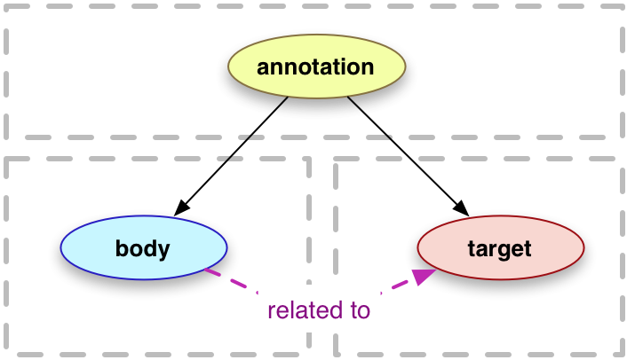

The Web Annotation Working Group has published three Recommendations for expressing annotations on the Web: the Web Annotation Data Model [annotation-model]; the Web Annotation Vocabulary [annotation-vocab]; and the Web Annotation Protocol [annotation-protocol]. These Recommendations define a serialization of the Model in a new, Web annotation-specific profile of JSON-LD [json-ld].
This Note describes and illustrates potential approaches for including annotations within HTML documents. Examples also are included illustrating the use within an HTML document of annotation Selectors as fragment identifiers. (The Working Group's Selectors and States Reference Note [selectors-states] defines the syntax used for Selectors as fragment identifiers.)
The approaches described in this document are incomplete and preliminary. They do not exhaust the full range of feasible options. The approaches discussed in this note have emerged from Working Group discussions and should be considered no more than initial starting points for further discussion, experimentation and development.
Status of This Document
This section describes the status of this document at the time of its publication. Other documents may supersede this document. A list of current W3C publications and the latest revision of this technical report can be found in the W3C technical reports index at https://www.w3.org/TR/.
Publication as a Working Group Note does not imply endorsement by the W3C Membership. This is a draft document and may be updated, replaced or obsoleted by other documents at any time. It is inappropriate to cite this document as other than work in progress.
"An annotation is considered to be a set of connected resources, typically including a body and target, and conveys that the body is related to the target.... This perspective results in a basic model with three parts, depicted below."

The Model goes on to define an extensible, interoperable framework for expressing such annotations in RDF-based vocabularies. The Model additionally defines a JSON-LD [json-ld] serialization of that framework. However, the Model does not prescribe a means for including an annotation within a Web page (HTML document)—even when the annotation targets all or part of the page itself or all or part of another, external Resource linked from the page.
For example, the quotation above is simply an HTML blockquote and contains no encoded reference to the quotation as it exists within the Web Annotation Data Model Recommendation [annotation-model], an HTML document.
This Note considers how a conformant expression of a Web Annotation or an annotation Selector that references a segment of an HTML document might usefully be embedded within the same or another HTML document. In addition to text embedded within the DOM, HTML documents often reference external resources such as images that are meant to be considered integral parts of an HTML Document when viewed on the Web, e.g., through the use of the HTML <img> element's src attribute. Approaches discussed in this Note would facilitate embedding in HTML an annotation targeting (in the context or scope of a Web page) an image or other similar Web page component resource external to an HTML document.
1.1 Scope
Pending further experimentation, use-case development, incubation and broader collaborative efforts, this Note stops short of proposing any new, annotation-specific extensions to HTML [html]. Nor does it propose any new, annotation-specific HTML elements or attributes. To address specific use cases, possible extensions of HTML have been discussed within the Web Annotation Working Group and elsewhere, e.g., an informal proposal for new note, notegroup, and noteref HTML elements to better handle footnote-style references within HTML documents [html-notes]. But for now this Note only considers approaches that can work out of the box today, without the need for an extension of HTML or the Web Annotation Vocabulary [annotation-vocab]. These approaches rely on existing mechanisms, e.g., RDFa, JSON-LD, fragment identifiers, to embed annotations and elements of annotations within HTML documents.
This document also neither addresses nor proposes user interface implementations. Some illustrations included have been drawn from demonstration or developmental implementations that include user interface features, but the focus of this Note is the inclusion of annotations in HTML, not interface design.
1.2 Motivation
The interest in embedding Web Annotations within HTML is motivated by several generic use cases that predate or have arisen over the course of the Web Annotation Working Group's existence, a few of which are listed here:
Personal Annotating
Personal annotations added to a locally stored or cached copy of an HTML Web page can obviate the need to create and maintain a separate system to store and manage annotations. Such annotations could be shared on a limited basis (e.g., via email) by sharing the locally modified HTML, prior to or instead of sharing the annotations publicly.
Offline-first Annotations
Annotations made while offline and embedded in a local copy of HTML might later be extracted from the locally stored HTML and published to an online, centralized Web Annotation Protocol [annotation-protocol] store of annotations when the user is back online.
Lighweight, decentralized Annotation Tools
Embedding annotations in HTML may facilitate the creation of lightweight annotation tools that are meant to be deployed in a decentralized fashion (i.e. copies deployed by individuals and used independently of any centralized annotation server or service).
Collaborative Annotating
Directly adding annotations to an HTML Web page that is being collaboratively authored, edited, and/or curated by a group of individuals, obviates the need for the group to agree on and select a single, central annotation repository or collaboration environment. But because the annotations as stored in the HTML still use a standard model and vocabulary, individualized tools used by members of the group for viewing and interacting with the annotations can still refer to the standard set of elements and attributes.
Wholly Internal Annotations
Requiring the external storage of internal (e.g., footnote) annotations, i.e., annotations linking text (an annotation target) appearing at one point in an HTML document to text (an annotation body) appearing elsewhere in the same HTML document is inefficient in most instances and can make interactive displays of these annotations unduly complicated.
2. Annotations Embedded as JSON-LD
JSON-LD [json-ld] is the serialization format used in the Web Annotation Data Model [annotation-model]. HTML can accommodate this serialization format directly via the use of the HTML <script> element with its
type attribute assigned the media type for a Web Annotation:
application/ld+json;profile="http://www.w3.org/ns/anno.jsonld".
The following three annotations are all embedded in a single HTML document. This document describes a digital image created by scanning a page from a Renaissance-era book; the object scanned was known as an emblem. A JPEG image of the emblem is linked from the HTML document using an <img> element. A transcription of the German language text of the emblem's motto (i.e., the emblem's caption) is included in the HTML document.
2.1 Annotating an HTML <div>
Use case for Example 1: Mara wants to annotate the transcription of the emblem motto with its Latin translation. The target of the annotation is the
<div> node of the HTML document that has an id attribute with the value "mottoTranscription". Because the target of the annotation is a node which has an id attribute, a CSS Selector is appropriate. The body of the annotation is the plain text of the Latin translation. To embed the body in the annotation, a TextualBody is used. To identify the annotation itself, an IRI [rfc3987] is provided as the value of the annotation's id property. It is not required that this IRI be dereferenceable.
While an HTML <script> node may itself have an id attribute, implementers are discouraged from using an HTML URL with fragment identifier to identify an annotation. An HTML fragment identifier is only intended to indicate and help navigate to a specific DOM node in an HTML document (see HTML5 Recommendation [html5] Section 5.6.9, "Navigating to a fragment identifier"). A fragment identifier does not unambiguously identify the contents of this node as a separate resource.
2.2 Annotating a Web page image
Use case for Example 2: Tim wants to tag the emblem image linked from the HTML document with an Iconclass descriptor. (Iconclass [iconclass] is a linked open data friendly, multilingual classification system for cultural content.) The body of this annotation is therefore an External Web Resource. To make clear that the image is being annotated within the context of the Web page describing the emblem, a SpecificResource with a scope property is used to express the target of the annotation.
Use case for Example 3: Myung-Ja wants to link the description of this emblem with another digitized emblem at the University of Illinois. The other emblem, an external Web resource, is the body of the annotation. The motivation of the annotation is "linking". The entire <body> node of the HTML document serves as the target of this annotation. As with Example 1, a CSS Selector is used to express the target.
While HTML <script> elements are allowed in both the <head> and the <body> elements, it is suggested to add embedded annotations to the <head> element when targeting the whole of the <body> element of an HTML document; this avoids any potential ambiguity that might arise from an annotation targeting itself.
3. Annotations Embedded as RDFa
Another approach of embedding annotations into HTML is to use RDFa [rdfa-primer]. The advantage of using RDFa is that the annotation terms are mixed with the core HTML content, meaning that, for example, the text in the HTML source can be also re-used as an annotation textual body. In other words, a single resource may become both human visible as well as machine-readable. On the other hand, RDFa is an RDF serialization syntax: the RDF vocabulary described in [annotation-vocab] must thefore be used instead of the JSON-LD encoding used in the [annotation-model] document. This requirement may be problematic for some users.
Example
This example is a significantly simplified version of a more complex application that uses an RDFa encoding of annotations within a framework for decentralised article authoring and annotation (see for further details). The example shows one of the advantages of RDFa: the “Communities have various…” text, while readable when the corresponding HTML page is displayed, automatically provides the textual body of the annotation. The relative complexity of mixing complex RDFa structures with HTML makes it more suitable for automatic code generation (e.g., through authoring systems) rather than manual editing.
Note
The example below relies on the fact that RDFa parsers use the RDFa Core Initial Context to understand the predefined prefixes.
Example 4: Simplified dokieli example
<articleresource=""typeof="oa:Annotation"><h1property="schema:name">Sarven Capadisli <spanproperty="oa:motivatedBy"resource="oa:comments">comments</span></h1><dl><dt>Canonical</dt><ddproperty="oa:canonical"resource="urn:uuid:5fdc8f8d-5930...">5fdc8f8d-5930...</dd><dt><ahref="#abstract"property="oa:hasTarget">In response to</a> (<aabout="#abstract"href="http://example.org/ldn"property="oa:hasSource"typeof="oa:SpecificResource">part of</a>)</dt><dd><blockquoteabout="#abstract"cite="http://example.org/ldn#abstract"><spanproperty="oa:hasSelector"typeof="oa:FragmentSelector"><spanproperty="oa:refinedBy"typeof="oa:TextQuoteSelector"><spanproperty="oa:prefix">N provides a building block for </span><spanproperty="oa:exact">decentralised</span><spanproperty="oa:suffix"> Web applications. This permits e</span></span></span></blockquote></dd><dt>Rendered via</dt><dd><aabout="#abstract"href="https://dokie.li/"property="oa:renderedVia">dokieli</a></dd></dl><sectionrel="oa:hasBody"><divdatatype="rdf:HTML"property="rdf:value"typeof="oa:TextualBody">
Communities have various semantics for the term <em>decentralisation</em>.</div></section></article>
Interpreting this HTML content yields, in [turtle]:
Example 5: dokieli example in Turtle
@prefixoa:<http://www.w3.org/ns/oa#>.@prefixschema:<http://schema.org/>.@prefixrdf:<http://www.w3.org/1999/02/22-rdf-syntax-ns#>.<https://example.org/art>aoa:Annotation;schema:name"Sarven Capadisli comments";oa:canonical<urn:uuid:5fdc8f8d-5930...>;oa:hasBody[aoa:TextualBody;rdf:value"Communities have various semantics for the term <em>decentralisation</em>."^^rdf:HTML];oa:hasTarget<http://example.org/art#abstract>;oa:motivatedByoa:comments.<http://example.org/art#abstract>aoa:SpecificResource;oa:hasSelector[aoa:FragmentSelector;oa:refinedBy[aoa:TextQuoteSelector;oa:exact"decentralised";oa:prefix"N provides a building block for ";oa:suffix" Web applications. This permits e"]];oa:hasSource<http://example.org/ldn>;oa:renderedVia<https://dokie.li/>.
3.1 Mixing RDFa with embedded RDF content
The approach used in 2.Annotations Embedded as JSON-LD can be combined, within the same HTML content, with the usage of RDFa. It is also possible to use the same approach (namely using a <script> element with an appropriate media type) to include RDF using other serializations, for exaple Turtle (see Appendix A of the [turtle] specification for more details). I.e, it is possible to modify the dokieli example above as follows:
Example 6: Simplified dokieli example with embedded turtle
<scripttype="text/turtle">
@prefix oa: <http://www.w3.org/ns/oa#> .
<http://example.org/art#abstract> a oa:SpecificResource ;
oa:hasSelector [
a oa:FragmentSelector ;
oa:refinedBy [
a oa:TextQuoteSelector ;
oa:exact "decentralised" ;
oa:prefix "N provides a building block for " ;
oa:suffix " Web applications. This permits e"
]
] ;
</script><articleresource=""typeof="oa:Annotation"><h1property="schema:name">Sarven Capadisli <spanproperty="oa:motivatedBy"resource="oa:comments">comments</span></h1><dl><dt>Canonical</dt><ddproperty="oa:canonical"resource="urn:uuid:5fdc8f8d-5930...">5fdc8f8d-5930...</dd><dt><ahref="#abstract"property="oa:hasTarget">In response to</a> (<aabout="#abstract"href="http://example.org/ldn"property="oa:hasSource"typeof="oa:SpecificResource">part of</a>)</dt><dt>Rendered via</dt><dd><aabout="#abstract"href="https://dokie.li/"property="oa:renderedVia">dokieli</a></dd></dl><sectionrel="oa:hasBody"><divdatatype="rdf:HTML"property="rdf:value"typeof="oa:TextualBody">
Communities have various semantics for the term <em>decentralisation</em>.</div></section></article>
With an appropriate tools that understand both RDFa and the embedded Turtle the results is identical to Example 5.
Care should be taken, however, that the exact details of what it means to mix both RDFa and embedded RDF contents within the same HTML file is not (yet) formally specified. Tools that do understand this type of mix usually parse the various syntaxes into separate RDF Graphs (see [rdf11-concepts]) which are then merged following the rules described in the RDF Semantics document [rdf11-mt]. This means that, for example, blank nodes are not shared, nor are namespace declarations among the different serializations.
Example 7: Example blockquote and q tags using the cite attribute
<blockquotecite="https://www.w3.org/TR/annotation-model/#introduction"><qcite="https://www.w3.org/TR/annotation-model/#selector(type=TextPositionSelector,start=8424,end=8270)">
An annotation is considered to be a set of connected resources, typically including
a body and target, and conveys that the body is related to the target.</q><qcite="https://www.w3.org/TR/annotation-model/#selector(type=TextPositionSelector,start=8651,end=8576)">
This perspective results in a basic model with three parts, depicted below.</q><qcite="https://www.w3.org/TR/annotation-model/#selector(type=XPathSelector,value=//*[@id%3D%22introduction%22]/img)"><imgsrc="images/intro_model.png"alt="Basic Model: Annotation, Body and Target"width="400"/></q></blockquote>
In this example, the <blockquote>'s cite attribute is set to a typical HTML fragment identifier. The <q> tags use cite attribute values set to Web Annotation Selector Fragment Identifiers—which are convertable into Web Annotation Data Model [annotation-model] Selector statements. The <img> tag is also wrapped in a <q> as it's location is not directly contained in either of the previously quoted section. However, all of the quotations (within the <q> tags) exist within the #introduction section referenced by the surrounding <blockquote>.
The Selectors and States Note [selectors-states] explains that fragment identifiers are technically defined when the media type is specified. However in practice the utilization of fragment identifiers by publishers and developers ranges from browser state handling to anchoring highlights of quotations (as seen here).
Using these fragment identifiers as values of the cite attribute on <blockquote> and <q> tags provides a means for both specificity and future extensibility. Site authors as well as browser, server, and JavaScript developers may take advantage of these citations identifiers for re-anchoring selection or extracting (and verifying) quotations made within an HTML document which uses this method.
4.2 Example using an <a> tag
Using the same methods described above, <a> tags may also be used to express a desired highlight or reference. However, as mentioned above, the use of that fragment within the retrieved resource may vary.
Example 8: Example using an anchor tag
<p>According to the Web Annotation Data Model spec
<ahref="https://www.w3.org/TR/annotation-model/#selector(type=TextPositionSelector,start=8424,end=8270)">
an annotation is considered to be a set of what things?</a>
(click the link to find out!)</p>
A. Acknowledgements
The Web Annotation Working Group gratefully acknowledges the contributions of the Open Annotation Community Group. The output of the Community Group was fundamental to the current data model. In particular the editors would like to thank Herbert Van de Sompel of Los Alamos National Laboratory for his editorial contributions throughout the Community Group process.
The following people have been instrumental in providing thoughts, feedback, reviews, content, criticism and input in the creation of this specification:
Vladimir Alexiev, Art Barstow, Tim Berners-Lee, Chris Birk, Dan Brickley, Sarven Capadisli, Paolo Ciccarese, Tim Cole, Ray Denenberg, TB Dinesh, Sergiu Gordea, Benjamin Goering, Amy Guy, Ivan Herman, Frederick Hirsch, Antoine Isaac, Jacob Jett, Takeshi Kanai, Gregg Kellogg, Andreas Kuckartz, Randall Leeds, Hugo Manguinhas, Ben De Meester, Luc Moreau, Addison Phillips, Davis Salisbury, Robert Sanderson, Maria Janina Sarol, Felix Sasaki, Doug Schepers, Tzviya Siegman, Stian Soiland-Reyes, Manu Sporny, Nick Stenning, Jon Stroop, Lutz Suhrbier, Kyrce Swenson, Raphaël Troncy, Simeon Warner, Erik Wilde, Dan Whaley, Benjamin Young